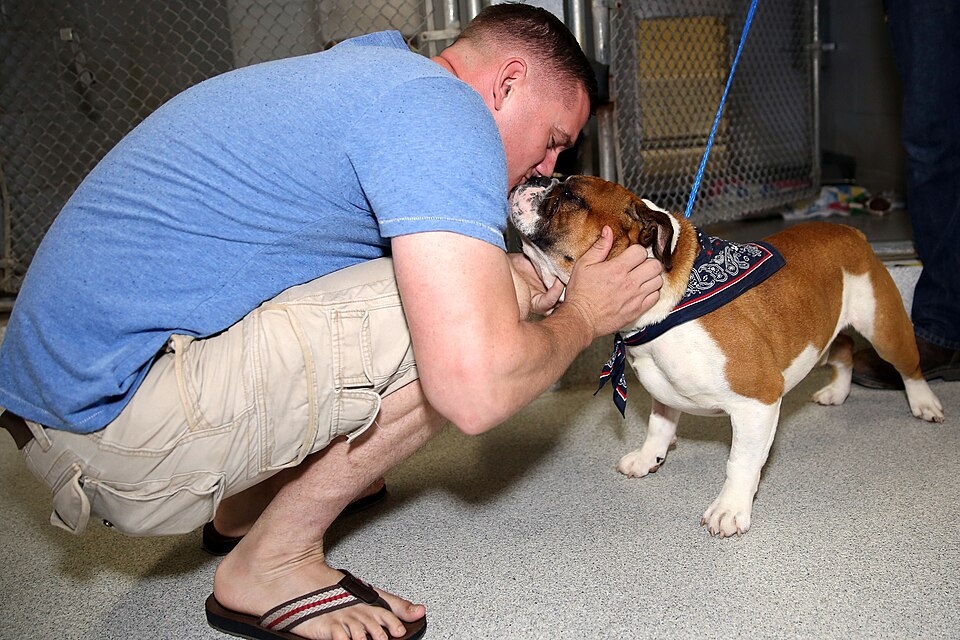
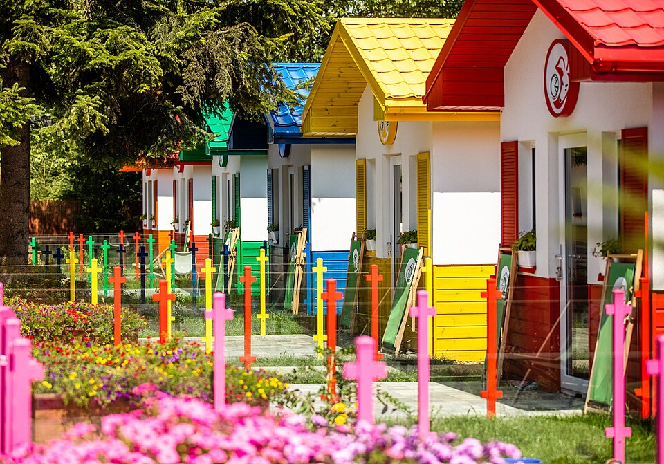

A local pet adoption service serving communities across Georgia
Every Pet Deserves a Front Porch
Welcome to Peach State Paws, a neighborhood pet adoption service
based right here in Georgia. We work with local shelters and volunteer foster
homes across the metro Atlanta area to match rescued dogs, cats, and small
animals with loving families like yours.
Pet adoption is the
process of taking responsibility for a pet that a previous owner has abandoned
or released to a shelter or rescue organization. According to the
ASPCA,
about 6.3 million companion animals enter U.S. shelters every year — and every
adoption opens up space to rescue another animal in need.

Adoption day is the best day — a rescued bulldog meets his new family
at a community adoption event. (Photo: U.S. Marine Corps / Wikimedia Commons)
Why Adopt Instead of Shop?
You save a life — and free up shelter space for the next rescue.
Adoption is affordable — fees include vaccinations, microchipping, and spay/neuter.
Adult pets come "pre-trained" — many already know basic commands and house manners.
Shelter staff know their animals — we help match a pet's personality to your lifestyle.
You fight puppy mills — adopting reduces demand for high-volume commercial breeding.
How Our Adoption Process Works
Browse our available pets online or visit us at a weekend adoption event.
Fill out a short adoption application so we can learn about your home and lifestyle.
Meet your match! Spend time with the pet at our center or their foster home.
Complete a quick home-suitability chat with one of our volunteers.
Pay the adoption fee, sign the adoption agreement, and take your new friend home.

Our partner shelters care for dozens of dogs who are ready for a second
chance. (Photo: Wikimedia Commons)
Upcoming Community Events in Georgia
First Saturday — Adoption meet-and-greet, Piedmont Park, Atlanta (10 AM–2 PM)
Second Sunday — Low-cost vaccination and microchip clinic (12 PM–4 PM)
Third Saturday — "Foster 101" volunteer orientation for new foster families
Every weekend — Shelter tours and kitten cuddle hours, walk-ins welcome
Can't adopt right now? You can still help! We always need
fosters, dog walkers, weekend volunteers, and donations of food, towels, and
toys. Every little bit keeps a Georgia pet safe and warm.